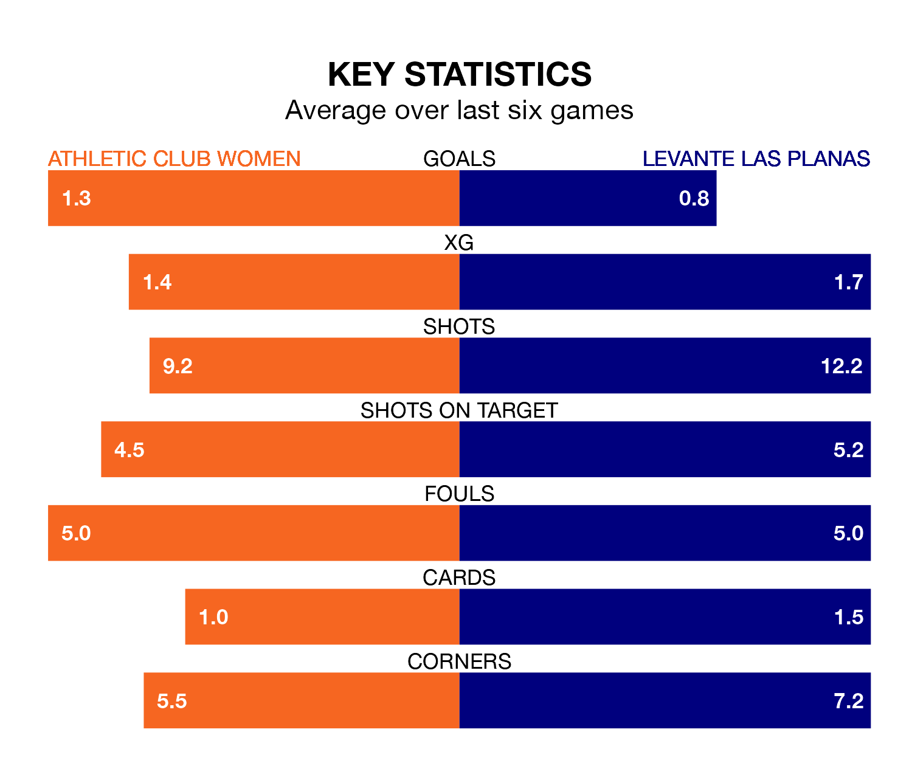

Athletic Club Women host Levante Las Planas at Instalaciones de Lezama Campo 1 on Sunday on the back of five consecutive wins in Liga F.
Athletic Club have picked up 15 points from their last six games, and they face a Levante Las Planas side who drew their last match, and have collected three points from the last possible 18.
In Adriana Nanclares Romero, Athletic Club can rely on one of the league's safest pair of hands. She has kept seven clean sheets in her 15 appearances this season, and only one other 'keeper – Barcelona Women's Catalina Thomas Coll Lluch – has been able to prevent the opposition scoring on more occasions in Liga F.
In Levante Las Planas's net, Nayluisa Jhaylenny Cáceres Acevedo has one clean sheet in 20 games. She has conceded a goal every 52 minutes, twice as often as the 104 minutes between goals for Nanclares Romero.
The visitors are 12th in the table after 21 games, of which they have won four and drawn eight, earning 20 points.
The home team are six places ahead of Levante Las Planas in sixth, with 11 wins and two draws putting them on 35 points.
With 23 goals in 21 games so far this season, Athletic Club are scoring at below the league average rate with 1.1 goals per game. But they are conceding fewer than average too, letting in 24 goals at a rate of 1.1 per game.
Levante Las Planas are also below average scorers, with 1.1 goals per game, compared to a league average of 1.6. They have conceded 1.9 goals per game.
In the last three years, Athletic Club and Levante Las Planas have played each other on three occasions. Athletic Club won two of them and Levante Las Planas one.
Their last meeting was on October 1, when Levante Las Planas won 2-1 at home.
Athletic Club's last match was on March 23, a 1-0 win against Real Sociedad Women, with Nahikari García Pérez getting the goal for Athletic Club.
Levante Las Planas drew 1-1 with Villarreal Women last time out, on March 24, with Jessica Dahiana Martínez Villagra on the scoresheet.
Updated: 12:16 (UTC), 25/03/24